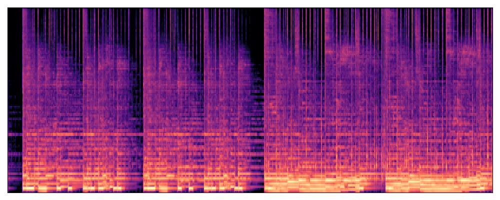

<html></html>

<head>
	<title>Presto! Distilling steps and layers for accelerating music generation</title>

  <link rel="stylesheet" href="https://stackpath.bootstrapcdn.com/bootstrap/4.5.2/css/bootstrap.min.css"
  integrity="sha384-JcKb8q3iqJ61gNV9KGb8thSsNjpSL0n8PARn9HuZOnIxN0hoP+VmmDGMN5t9UJ0Z" crossorigin="anonymous">
<meta name="theme-color" content="#563d7c">
<link rel="stylesheet" href="styles.css">
<link rel="stylesheet" href="https://cdn.jsdelivr.net/npm/bootstrap-icons@1.8.0/font/bootstrap-icons.css">
<style>
  table {
      width: 100%;
      border-collapse: collapse;
      margin: 20px 0;
  }

td {
      border: 1px solid #ccc;
      padding: 10px;
      text-align: center;
}
.small-img {
    width: 300px; /* Adjust the width as needed */
    height: auto;
}

</style>
</head>

<body bgcolor="#FFFFFF" link="#000000" vlink="#000000" alink="#000000">

<div class="text-center">
  <br>
    <div class="text-wrap" width="200px">
    <font face="helvetica , ariel, &#39;sans serif&#39;" size="6">
      <b>Presto! Distilling Steps and Layers for Accelerating Music Generation</b><br><br>
    </font>
    </div>

   

    <p style="font-size: 1.3em; margin-bottom: 0;">
        <a href="https://zacharynovack.github.io/"> Zachary Novack<sup>&#x0023&#x266d*</sup> </a>&nbsp;
        <a href="https://gzhu06.github.io/"> Ge Zhu<sup>&#x266d</sup> </a>&nbsp;
        <a href="https://jmcasebeer.github.io/"> Jonah Casebeer<sup>&#x266d</sup> </a>&nbsp;
        <a href="https://cseweb.ucsd.edu/~jmcauley/">Julian McAuley<sup>&#x0023</sup> </a>&nbsp;
        <a href="https://cseweb.ucsd.edu/~tberg/"> Taylor Berg-Kirkpatrick<sup>&#x0023</sup></a> &nbsp;
        <a href="https://njb.github.io/"> Nicholas J. Bryan<sup>&#x266d</sup></a> &nbsp;
    </p>

      <p style="margin-top: 0;">
        <sup>&#x0023</sup>University of California, San Diego<br>
        <sup>&#x266d</sup>Adobe Research <br>
        <sup>*</sup>Work done during an internship at Adobe Research <br>
      </p>
  
      <div class="m-5">
        <a class="btn btn-outline-dark" href="TBD" type="button"><i
            class="bi bi-newspaper"></i> Paper</a>
        <a class="btn btn-outline-dark" href="https://youtu.be/NE_x-5I19CY" type="button"> <i
            class="bi bi-camera-reels"></i> Video</a>
        <a class="btn btn-outline-dark" href="TBD" type="button"> <i
              class=""></i> &#129303; HF paper</a>
            
      </div>
  


        
      
      <div class="container mt-4" style="max-width: 1000px;">
        <div class="container">
    

            <div class="container mt-4 " style="max-width: 950px;">
              <div class="container">
                <div class="section">
                  <!-- # Show video -->
                  <iframe width="800" height="470" src="https://www.youtube.com/embed/NE_x-5I19CY?si=yBGTqY3WhDMfMymA" title="YouTube video player" frameborder="0" allow="accelerometer; autoplay; clipboard-write; encrypted-media; gyroscope; picture-in-picture; web-share" referrerpolicy="strict-origin-when-cross-origin" allowfullscreen></iframe>
                  <br>
                  <!-- Show Abstract -->
                  <h1 class="text-justify">Abstract</h1>
                  <hr>
                  <p class="pr-5 pl-5 text-justify">
                    Despite advances in diffusion-based text-to-music (TTM) methods, efficient, high-quality generation remains a challenge. 
                    We introduce Presto!, an approach to inference acceleration for score-based diffusion transformers via reducing both sampling steps and cost per step. 
                    To reduce steps, we develop a new score-based distribution matching distillation (DMD) method for the EDM-family of diffusion models, the first GAN-based distillation method for TTM. 
                    To reduce the cost per step, we develop a simple, but powerful improvement to a recent layer distillation method that improves learning via preserving hidden state variance. 
                    Finally, we combine our improved step and layer distillation methods together for a dual-faceted approach.
                    We evaluate our step and layer distillation methods independently and show each yield best-in-class performance. 
                    Furthermore, we find our combined distillation method can generate high-quality outputs with improved diversity accelerating our base model by 10-18x (32 second output in 230ms, 15x faster than the comparable SOTA model)
                    -- the fastest high-quality TTM model to our knowledge. 
                  </p>
                </div><br>

                <div class="section text-left" div style='text-align:left'>
                  <h1>Bibtex</h1>
                  <div style="background-color: #e9ecef; text-align:left;" >
                  <pre>
<code>@article{Novack2025Presto,
    title={Presto! Distilling steps and layers for accelerating music generation.}, 
    author={Zachary Novack and Ge Zhu and Jonah Casebeer and
            Julian McAuley and Taylor Berg-Kirkpatrick and Nicholas J. Bryan},
    year={2024},
    eprint={TBD},
    archivePrefix={arXiv},
    primaryClass={cs.SD}
}
</code></pre>
                  </div>
                </div>
      

                <div class="section text-justify">
                    <h1>Cherry-picked Examples</h1>
                    Custom prompts and examples. Each example was generated with 435ms of latency (batch size = 1), comprised of our accelerated model+VAE decoding (230ms) and our mono2stereo module from MusicHiFi (205ms).
                    <br><br>
                    <table class="table table-sm text-center" style="vertical-align: middle;">
                    <tbody>
        
                        <tr>
                            </tr>        
                            <tr>
                            <td colspan="12"><h5 class="text-center">Text</h5></td>
                            <td colspan="4"><h5 class="text-center">Presto (ours)</h5></td>
                            </tr>
        
                            <tr>
                            <td colspan="12"><p>crazy, wild, dance party</p></td>
                            <td colspan="4">
                                <audio controls> <source src="prompt_examples/crazy, wild, dance party.mp3" type="audio/mp3"></audio> <br>
                                
                            </td>
                                
                           </tr>
                           </tr>
        
                           <tr>
                            <td colspan="12"> <p>castle, fantasy, medieval --bpm 100</p></td>
                            <td colspan="4">
                                <audio controls> <source src="prompt_examples/castle, fantasy, medieval --bpm 100.mp3" type="audio/mp3"></audio> 
                                
                            </td>
                           </tr>

                           <tr>
                            <td colspan="12"><p>childrens music with harp --bpm 110</p></td>
                            <td colspan="4">
                                <audio controls><source src="prompt_examples/childrens music with harp --bpm 110.mp3" type="audio/mp3"></audio> 
                                
                            </td>
                           </tr>

                           <tr>
                            <td colspan="12"><p>classical french horn --bpm 80</p></td>
                            <td colspan="4">
                                <audio controls> <source src="prompt_examples/classical french horn --bpm 80.mp3" type="audio/mp3"></audio> 
                                
                            </td>
                           </tr>
        
                           <tr>
                            <td colspan="12"><p>driving electronic, trance, house --bpm 140</p></td>
                            <td colspan="4">
                                <audio controls> <source src="prompt_examples/driving electronic, trance, house --bpm 140.mp3" type="audio/mp3"></audio> 
                                </td>
                           </tr>
                       
                           <tr>
                            <td colspan="12"><p>electro-jazz, west african percussion --bpm 130</p></td>
                            <td colspan="4">
                                <audio controls> <source src="prompt_examples/electro-jazz, west african percussion --bpm 130.mp3" type="audio/mp3"></audio> 
                                
                            </td>
                           </tr>

                           <tr>
                            <td colspan="12"><p>hawaiian ukulele, upbeat --bpm 125</p></td>
                            <td colspan="4">
                                <audio controls> <source src="prompt_examples/hawaiian ukulele, upbeat --bpm 125.mp3" type="audio/mp3"></audio> 
                                
                            </td>
                           </tr>

                           <tr>
                            <td colspan="12"><p>hindustani, tabla, bluegrass, fusion --bpm 110</p></td>
                            <td colspan="4">
                                <audio controls> <source src="prompt_examples/hindustani, tabla, bluegrass, fusion --bpm 110.mp3" type="audio/mp3"></audio> 
                                
                            </td>
                           </tr>

                           <tr>
                            <td colspan="12"><p>horror film music</p></td>
                            <td colspan="4">
                                <audio controls> <source src="prompt_examples/horror film music.mp3" type="audio/mp3"></audio> 
                                </td>
                           </tr>

                           <tr>
                            <td colspan="12"><p>jazz, saxophone, big-band, high energy</p></td>
                            <td colspan="4">
                                <audio controls> <source src="prompt_examples/jazz, saxophone, big-band, high energy.mp3" type="audio/mp3"></audio> 
                                </td>
                           </tr>

                           <tr>
                            <td colspan="12"><p>latin samba song --bpm 90</p></td>
                            <td colspan="4">
                                <audio controls> <source src="prompt_examples/latin samba song --bpm 90.mp3" type="audio/mp3"></audio> 
                                </td>
                           </tr>

                           <tr>
                            <td colspan="12"><p>moody drum-n-bass, rave --bpm 184</p></td>
                            <td colspan="4">
                                <audio controls> <source src="prompt_examples/moody drum-n-bass, rave --bpm 184.mp3" type="audio/mp3"></audio>
                                 </td>
                           </tr>

                           <tr>
                            <td colspan="12"><p>music for a car race in the desert --bpm 140</p></td>
                            <td colspan="4">
                                <audio controls> <source src="prompt_examples/music for a car race in the desert --bpm 140.mp3" type="audio/mp3"></audio>
                                 </td>
                           </tr>
        
                           <tr>
                            <td colspan="12"><p>old-school hip-hop with a groovy beat</p></td>
                            <td colspan="4">
                                <audio controls> <source src="prompt_examples/old-school hip-hop with a groovy beat.mp3" type="audio/mp3"></audio> 
                                </td>
                           </tr>
    
                           <tr>
                            <td colspan="12"><p>powerful rock music, distorted guitar</p></td>
                            <td colspan="4">
                                <audio controls> <source src="prompt_examples/powerful rock music, distorted guitar.mp3" type="audio/mp3"></audio>
                                 </td>
                           </tr>

                           <tr>
                            <td colspan="12"><p>southern hip-hop, hard-core  --bpm 80</p></td>
                            <td colspan="4">
                                <audio controls> <source src="prompt_examples/southern hip-hop, hard-core  --bpm 80.mp3" type="audio/mp3"></audio> 
                                </td>
                           </tr>

                           <tr>
                            <td colspan="12"><p>thrash djent --bpm 150</p></td>
                            <td colspan="4">
                                <audio controls> <source src="prompt_examples/thrash djent --bpm 150.mp3" type="audio/mp3"></audio> 
                                </td>
                           </tr>

                           <tr>
                            <td colspan="12"><p>uptempo swing, big-band, bebop --bpm 200</p></td>
                            <td colspan="4">
                                <audio controls> <source src="prompt_examples/uptempo swing, big-band, bebop --bpm 200.mp3" type="audio/mp3"></audio> 
                                </td>
                           </tr>
                    </tbody>
                      </table>
                  </div>


          <div class="section text-justify">
            <h1>Song Describer Prompt Examples (Random)</h1>
            Random Song Describer prompts. One prompt outputs.
            <br><br>
            <table class="table table-sm text-center" style="vertical-align: middle;">
            <tbody>

                <tr>
                    </tr>        
                    <tr>
                    <td colspan="12"><h5 class="text-center">Text</h5></td>
                    <td colspan="4"><h5 class="text-center">Presto (ours)</h5></td>
                    <td colspan="4"><h5 class="text-center">Base DiT</h5></td>
                    <td colspan="4"><h5 class="text-center">Stable Audio Open</h5></td>
                    </tr>

                    <tr>
                        <td colspan="12"><p>1055022-This song that features a piano, cello and oboe starts calmly and then arrives to a crescendo to give a triumphant atmosphere</p></td>
                        <td colspan="4">
                            <audio controls> <source src="random_examples/presto/1055022-This song that features a piano, cello and oboe starts calmly and then arrives to a crescendo to give a triumphant atmosphere.mp3" type="audio/mp3"></audio> </td>
                        <td colspan="4">
                            <audio controls> <source src="random_examples/base/1055022-This song that features a piano, cello and oboe starts calmly and then arrives to a crescendo to give a triumphant atmosphere.mp3" type="audio/mp3"></audio> </td>
                        <td colspan="4">
                            <audio controls> <source src="random_examples/sao/1055022-This song that features a piano, cello and oboe starts calmly and then arrives to a crescendo to give a triumphant atmosphere.mp3" type="audio/mp3"></audio> </td>
                   </tr>
                    
            
                    <tr>
                        <td colspan="12"><p>108303-Delayed synth blips and electronic drums combine on an ambient electronica track</p></td>
                        <td colspan="4">
                            <audio controls> <source src="random_examples/presto/108303-Delayed synth blips and electronic drums combine on an ambient electronica track.mp3" type="audio/mp3"></audio> </td>
                        <td colspan="4">
                            <audio controls> <source src="random_examples/base/108303-Delayed synth blips and electronic drums combine on an ambient electronica track.mp3" type="audio/mp3"></audio> </td>
                        <td colspan="4">
                            <audio controls> <source src="random_examples/sao/108303-Delayed synth blips and electronic drums combine on an ambient electronica track.mp3" type="audio/mp3"></audio> </td>
                   </tr>
                    
            
                    <tr>
                        <td colspan="12"><p>103887-Two electric guitars in conversation with each other, one with a wua-wua effect and the other with a strong delay effect</p></td>
                        <td colspan="4">
                            <audio controls> <source src="random_examples/presto/103887-Two electric guitars in conversation with each other, one with a wua-wua effect and the other with a strong delay effect.mp3" type="audio/mp3"></audio> </td>
                        <td colspan="4">
                            <audio controls> <source src="random_examples/base/103887-Two electric guitars in conversation with each other, one with a wua-wua effect and the other with a strong delay effect.mp3" type="audio/mp3"></audio> </td>
                        <td colspan="4">
                            <audio controls> <source src="random_examples/sao/103887-Two electric guitars in conversation with each other, one with a wua-wua effect and the other with a strong delay effect.mp3" type="audio/mp3"></audio> </td>
                   </tr>
                    
            
                    <tr>
                        <td colspan="12"><p>1051196-country-pop relaxing song with happy mood and acoustic guitar, ideal for young girls going out shopping or dreaming about their love</p></td>
                        <td colspan="4">
                            <audio controls> <source src="random_examples/presto/1051196-country-pop relaxing song with happy mood and acoustic guitar, ideal for young girls going out shopping or dreaming about their love.mp3" type="audio/mp3"></audio> </td>
                        <td colspan="4">
                            <audio controls> <source src="random_examples/base/1051196-country-pop relaxing song with happy mood and acoustic guitar, ideal for young girls going out shopping or dreaming about their love.mp3" type="audio/mp3"></audio> </td>
                        <td colspan="4">
                            <audio controls> <source src="random_examples/sao/1051196-country-pop relaxing song with happy mood and acoustic guitar, ideal for young girls going out shopping or dreaming about their love.mp3" type="audio/mp3"></audio> </td>
                   </tr>
                    
            
                    <tr>
                        <td colspan="12"><p>103892-bluesy guitar with a slow repetitive rythm in a smoky room in latin america</p></td>
                        <td colspan="4">
                            <audio controls> <source src="random_examples/presto/103892-bluesy guitar with a slow repetitive rythm in a smoky room in latin america.mp3" type="audio/mp3"></audio> </td>
                        <td colspan="4">
                            <audio controls> <source src="random_examples/base/103892-bluesy guitar with a slow repetitive rythm in a smoky room in latin america.mp3" type="audio/mp3"></audio> </td>
                        <td colspan="4">
                            <audio controls> <source src="random_examples/sao/103892-bluesy guitar with a slow repetitive rythm in a smoky room in latin america.mp3" type="audio/mp3"></audio> </td>
                   </tr>
                    
            
                    <tr>
                        <td colspan="12"><p>1061473-oh, this is kind of post punk music, remind me my high school memory</p></td>
                        <td colspan="4">
                            <audio controls> <source src="random_examples/presto/1061473-oh, this is kind of post punk music, remind me my high school memory.mp3" type="audio/mp3"></audio> </td>
                        <td colspan="4">
                            <audio controls> <source src="random_examples/base/1061473-oh, this is kind of post punk music, remind me my high school memory.mp3" type="audio/mp3"></audio> </td>
                        <td colspan="4">
                            <audio controls> <source src="random_examples/sao/1061473-oh, this is kind of post punk music, remind me my high school memory.mp3" type="audio/mp3"></audio> </td>
                   </tr>
                    
            
                    <tr>
                        <td colspan="12"><p>1009671-Upbeat fast tempo with a blues rock feel that one can dance</p></td>
                        <td colspan="4"><audio controls> <source src="random_examples/presto/1009671-Upbeat fast tempo with a blues rock feel that one can dance.mp3" type="audio/mp3"></audio> </td>
                        <td colspan="4"><audio controls> <source src="random_examples/base/1009671-Upbeat fast tempo with a blues rock feel that one can dance.mp3" type="audio/mp3"></audio> </td>
                        <td colspan="4"><audio controls> <source src="random_examples/sao/1009671-Upbeat fast tempo with a blues rock feel that one can dance.mp3" type="audio/mp3"></audio> </td>
                   </tr>
                    
            
                    <tr>
                        <td colspan="12"><p>1063454-A deeply soothing track featuring two string instruments makes one peaceful with theirselves and the world</p></td>
                        <td colspan="4"><audio controls> <source src="random_examples/presto/1063454-A deeply soothing track featuring two string instruments makes one peaceful with theirselves and the world.mp3" type="audio/mp3"></audio> </td>
                        <td colspan="4"><audio controls> <source src="random_examples/base/1063454-A deeply soothing track featuring two string instruments makes one peaceful with theirselves and the world.mp3" type="audio/mp3"></audio> </td>
                        <td colspan="4"><audio controls> <source src="random_examples/sao/1063454-A deeply soothing track featuring two string instruments makes one peaceful with theirselves and the world.mp3" type="audio/mp3"></audio> </td>
                   </tr>
                    
            
                    <tr>
                        <td colspan="12"><p>1036934-Indie alike track to time-travel to mid 2000s</p></td>
                        <td colspan="4"><audio controls> <source src="random_examples/presto/1036934-Indie alike track to time-travel to mid 2000s.mp3" type="audio/mp3"></audio> </td>
                        <td colspan="4"><audio controls> <source src="random_examples/base/1036934-Indie alike track to time-travel to mid 2000s.mp3" type="audio/mp3"></audio> </td>
                        <td colspan="4"><audio controls> <source src="random_examples/sao/1036934-Indie alike track to time-travel to mid 2000s.mp3" type="audio/mp3"></audio> </td>
                   </tr>
                    
            
                    <tr>
                        <td colspan="12"><p>1062831-Only instrumental and based on electronic samples that picks up as the song progresses</p></td>
                        <td colspan="4"><audio controls> <source src="random_examples/presto/1062831-Only instrumental and based on electronic samples that picks up as the song progresses.mp3" type="audio/mp3"></audio> </td>
                        <td colspan="4"><audio controls> <source src="random_examples/base/1062831-Only instrumental and based on electronic samples that picks up as the song progresses.mp3" type="audio/mp3"></audio> </td>
                        <td colspan="4"><audio controls> <source src="random_examples/sao/1062831-Only instrumental and based on electronic samples that picks up as the song progresses.mp3" type="audio/mp3"></audio> </td>
                   </tr>
                    
            
                    <tr>
                        <td colspan="12"><p>1066198-Feels like there is an argument happening between two people with the constant beat making it like time is progressing forward which can be used for either casual listening, reminiscing on a memory or</p></td>
                        <td colspan="4"><audio controls> <source src="random_examples/presto/1066198-Feels like there is an argument happening between two people with the constant beat making it like time is progressing forward which can be used for either casual listening, reminiscing on a memory or.mp3" type="audio/mp3"></audio> </td>
                        <td colspan="4"><audio controls> <source src="random_examples/base/1066198-Feels like there is an argument happening between two people with the constant beat making it like time is progressing forward which can be used for either casual listening, reminiscing on a memory or.mp3" type="audio/mp3"></audio> </td>
                        <td colspan="4"><audio controls> <source src="random_examples/sao/1066198-Feels like there is an argument happening between two people with the constant beat making it like time is progressing forward which can be used for either casual listening, reminiscing on a memory or.mp3" type="audio/mp3"></audio> </td>
                   </tr>
                    
            
                    <tr>
                        <td colspan="12"><p>1050845-Synthetic orchestral piece in the style of a 90s war movie battle scene soundtrack, with prominent bass drums and dry brass section harmonies</p></td>
                        <td colspan="4"><audio controls> <source src="random_examples/presto/1050845-Synthetic orchestral piece in the style of a 90s war movie battle scene soundtrack, with prominent bass drums and dry brass section harmonies.mp3" type="audio/mp3"></audio> </td>
                        <td colspan="4"><audio controls> <source src="random_examples/base/1050845-Synthetic orchestral piece in the style of a 90s war movie battle scene soundtrack, with prominent bass drums and dry brass section harmonies.mp3" type="audio/mp3"></audio> </td>
                        <td colspan="4"><audio controls> <source src="random_examples/sao/1050845-Synthetic orchestral piece in the style of a 90s war movie battle scene soundtrack, with prominent bass drums and dry brass section harmonies.mp3" type="audio/mp3"></audio> </td>
                   </tr>
                    
            
                    <tr>
                        <td colspan="12"><p>1061369-Probably a three piece band with melodic guitar, heavy bass and drums playing an instrumental and energetic piece</p></td>
                        <td colspan="4"><audio controls> <source src="random_examples/presto/1061369-Probably a three piece band with melodic guitar, heavy bass and drums playing an instrumental and energetic piece.mp3" type="audio/mp3"></audio> </td>
                        <td colspan="4"><audio controls> <source src="random_examples/base/1061369-Probably a three piece band with melodic guitar, heavy bass and drums playing an instrumental and energetic piece.mp3" type="audio/mp3"></audio> </td>
                        <td colspan="4"><audio controls> <source src="random_examples/sao/1061369-Probably a three piece band with melodic guitar, heavy bass and drums playing an instrumental and energetic piece.mp3" type="audio/mp3"></audio> </td>
                   </tr>
                    
            
                    <tr>
                        <td colspan="12"><p>1063332-Groovy instrumental funk rock track with occasional guitar solos that give you a feeling of longing</p></td>
                        <td colspan="4"><audio controls> <source src="random_examples/presto/1063332-Groovy instrumental funk rock track with occasional guitar solos that give you a feeling of longing.mp3" type="audio/mp3"></audio> </td>
                        <td colspan="4"><audio controls> <source src="random_examples/base/1063332-Groovy instrumental funk rock track with occasional guitar solos that give you a feeling of longing.mp3" type="audio/mp3"></audio> </td>
                        <td colspan="4"><audio controls> <source src="random_examples/sao/1063332-Groovy instrumental funk rock track with occasional guitar solos that give you a feeling of longing.mp3" type="audio/mp3"></audio> </td>
                   </tr>
                    
            
                    <tr>
                        <td colspan="12"><p>10575-A track with elements from eurodance and indie guitars</p></td>
                        <td colspan="4"><audio controls> <source src="random_examples/presto/10575-A track with elements from eurodance and indie guitars.mp3" type="audio/mp3"></audio> </td>
                        <td colspan="4"><audio controls> <source src="random_examples/base/10575-A track with elements from eurodance and indie guitars.mp3" type="audio/mp3"></audio> </td>
                        <td colspan="4"><audio controls> <source src="random_examples/sao/10575-A track with elements from eurodance and indie guitars.mp3" type="audio/mp3"></audio> </td>
                   </tr>
                    
            
                    <tr>
                        <td colspan="12"><p>1063331-An instrumental hopefully positive track where the foreground melody features a classic guitar</p></td>
                        <td colspan="4"><audio controls> <source src="random_examples/presto/1063331-An instrumental hopefully positive track where the foreground melody features a classic guitar.mp3" type="audio/mp3"></audio> </td>
                        <td colspan="4"><audio controls> <source src="random_examples/base/1063331-An instrumental hopefully positive track where the foreground melody features a classic guitar.mp3" type="audio/mp3"></audio> </td>
                        <td colspan="4"><audio controls> <source src="random_examples/sao/1063331-An instrumental hopefully positive track where the foreground melody features a classic guitar.mp3" type="audio/mp3"></audio> </td>
                   </tr>
                    
            
                    <tr>
                        <td colspan="12"><p>1009672-A joyful and lively song that will make you want to dance right away</p></td>
                        <td colspan="4"><audio controls> <source src="random_examples/presto/1009672-A joyful and lively song that will make you want to dance right away.mp3" type="audio/mp3"></audio> </td>
                        <td colspan="4"><audio controls> <source src="random_examples/base/1009672-A joyful and lively song that will make you want to dance right away.mp3" type="audio/mp3"></audio> </td>
                        <td colspan="4"><audio controls> <source src="random_examples/sao/1009672-A joyful and lively song that will make you want to dance right away.mp3" type="audio/mp3"></audio> </td>
                   </tr>
                    
            
                    <tr>
                        <td colspan="12"><p>1054396-fast and fun beat-based indie pop to set a protagonist-gets-good-at-x movie montage to</p></td>
                        <td colspan="4"><audio controls> <source src="random_examples/presto/1054396-fast and fun beat-based indie pop to set a protagonist-gets-good-at-x movie montage to.mp3" type="audio/mp3"></audio> </td>
                        <td colspan="4"><audio controls> <source src="random_examples/base/1054396-fast and fun beat-based indie pop to set a protagonist-gets-good-at-x movie montage to.mp3" type="audio/mp3"></audio> </td>
                        <td colspan="4"><audio controls> <source src="random_examples/sao/1054396-fast and fun beat-based indie pop to set a protagonist-gets-good-at-x movie montage to.mp3" type="audio/mp3"></audio> </td>
                   </tr>
                    
            
                    <tr>
                        <td colspan="12"><p>1060600-Melodic jazz piece starting off with a solo sax intro and continues with smooth electric guitar and synthesizer riffs</p></td>
                        <td colspan="4"><audio controls> <source src="random_examples/presto/1060600-Melodic jazz piece starting off with a solo sax intro and continues with smooth electric guitar and synthesizer riffs.mp3" type="audio/mp3"></audio> </td>
                        <td colspan="4"><audio controls> <source src="random_examples/base/1060600-Melodic jazz piece starting off with a solo sax intro and continues with smooth electric guitar and synthesizer riffs.mp3" type="audio/mp3"></audio> </td>
                        <td colspan="4"><audio controls> <source src="random_examples/sao/1060600-Melodic jazz piece starting off with a solo sax intro and continues with smooth electric guitar and synthesizer riffs.mp3" type="audio/mp3"></audio> </td>
                   </tr>
                    
            
                    <tr>
                        <td colspan="12"><p>1007274-acoustic guitar solo track with consistent rhythm and repeating progression, suitable for a relaxing afternoon tea</p></td>
                        <td colspan="4"><audio controls> <source src="random_examples/presto/1007274-acoustic guitar solo track with consistent rhythm and repeating progression, suitable for a relaxing afternoon tea.mp3" type="audio/mp3"></audio> </td>
                        <td colspan="4"><audio controls> <source src="random_examples/base/1007274-acoustic guitar solo track with consistent rhythm and repeating progression, suitable for a relaxing afternoon tea.mp3" type="audio/mp3"></audio> </td>
                        <td colspan="4"><audio controls> <source src="random_examples/sao/1007274-acoustic guitar solo track with consistent rhythm and repeating progression, suitable for a relaxing afternoon tea.mp3" type="audio/mp3"></audio> </td>
                   </tr>
                    
            
                    <tr>
                        <td colspan="12"><p>1004034-Electronic music that has a constant melody throughout with accompanying instruments used to supplement the melody which can be heard in possibly a casual setting</p></td>
                        <td colspan="4"><audio controls> <source src="random_examples/presto/1004034-Electronic music that has a constant melody throughout with accompanying instruments used to supplement the melody which can be heard in possibly a casual setting.mp3" type="audio/mp3"></audio> </td>
                        <td colspan="4"><audio controls> <source src="random_examples/base/1004034-Electronic music that has a constant melody throughout with accompanying instruments used to supplement the melody which can be heard in possibly a casual setting.mp3" type="audio/mp3"></audio> </td>
                        <td colspan="4"><audio controls> <source src="random_examples/sao/1004034-Electronic music that has a constant melody throughout with accompanying instruments used to supplement the melody which can be heard in possibly a casual setting.mp3" type="audio/mp3"></audio> </td>
                   </tr>
                    
            
                    <tr>
                        <td colspan="12"><p>1053845-An electronic ambient track, with a dark tone The song progresses building the sections on top of each other A hollow percussion drum beat builds on top of a dark and soft harp, towards the end a viol</p></td>
                        <td colspan="4"><audio controls> <source src="random_examples/presto/1053845-An electronic ambient track, with a dark tone The song progresses building the sections on top of each other A hollow percussion drum beat builds on top of a dark and soft harp, towards the end a viol.mp3" type="audio/mp3"></audio> </td>
                        <td colspan="4"><audio controls> <source src="random_examples/base/1053845-An electronic ambient track, with a dark tone The song progresses building the sections on top of each other A hollow percussion drum beat builds on top of a dark and soft harp, towards the end a viol.mp3" type="audio/mp3"></audio> </td>
                        <td colspan="4"><audio controls> <source src="random_examples/sao/1053845-An electronic ambient track, with a dark tone The song progresses building the sections on top of each other A hollow percussion drum beat builds on top of a dark and soft harp, towards the end a viol.mp3" type="audio/mp3"></audio> </td>
                   </tr>
                    
            
                    <tr>
                        <td colspan="12"><p>1051201-Im in a charismatic church and feeling sea sick from all the swaying to and fro</p></td>
                        <td colspan="4"><audio controls> <source src="random_examples/presto/1051201-Im in a charismatic church and feeling sea sick from all the swaying to and fro.mp3" type="audio/mp3"></audio> </td>
                        <td colspan="4"><audio controls> <source src="random_examples/base/1051201-Im in a charismatic church and feeling sea sick from all the swaying to and fro.mp3" type="audio/mp3"></audio> </td>
                        <td colspan="4"><audio controls> <source src="random_examples/sao/1051201-Im in a charismatic church and feeling sea sick from all the swaying to and fro.mp3" type="audio/mp3"></audio> </td>
                   </tr>
                    
            
                    <tr>
                        <td colspan="12"><p>103333-This is an instrumental track based on electronic samples that can be used before the start of a movie to give a doomsday or post apocalypse feel</p></td>
                        <td colspan="4"><audio controls> <source src="random_examples/presto/103333-This is an instrumental track based on electronic samples that can be used before the start of a movie to give a doomsday or post apocalypse feel.mp3" type="audio/mp3"></audio> </td>
                        <td colspan="4"><audio controls> <source src="random_examples/base/103333-This is an instrumental track based on electronic samples that can be used before the start of a movie to give a doomsday or post apocalypse feel.mp3" type="audio/mp3"></audio> </td>
                        <td colspan="4"><audio controls> <source src="random_examples/sao/103333-This is an instrumental track based on electronic samples that can be used before the start of a movie to give a doomsday or post apocalypse feel.mp3" type="audio/mp3"></audio> </td>
                   </tr>
                    
            
                    <tr>
                        <td colspan="12"><p>1066197-the song is moving piano is playing over long notes</p></td>
                        <td colspan="4"><audio controls> <source src="random_examples/presto/1066197-the song is moving piano is playing over long notes.mp3" type="audio/mp3"></audio> </td>
                        <td colspan="4"><audio controls> <source src="random_examples/base/1066197-the song is moving piano is playing over long notes.mp3" type="audio/mp3"></audio> </td>
                        <td colspan="4"><audio controls> <source src="random_examples/sao/1066197-the song is moving piano is playing over long notes.mp3" type="audio/mp3"></audio> </td>
                   </tr>
                    
            
                    <tr>
                        <td colspan="12"><p>1054342-A slow tempo guitar picking song of a folk genre which can be played on a road trip it evokes a relaxed sensation</p></td>
                        <td colspan="4"><audio controls> <source src="random_examples/presto/1054342-A slow tempo guitar picking song of a folk genre which can be played on a road trip it evokes a relaxed sensation.mp3" type="audio/mp3"></audio> </td>
                        <td colspan="4"><audio controls> <source src="random_examples/base/1054342-A slow tempo guitar picking song of a folk genre which can be played on a road trip it evokes a relaxed sensation.mp3" type="audio/mp3"></audio> </td>
                        <td colspan="4"><audio controls> <source src="random_examples/sao/1054342-A slow tempo guitar picking song of a folk genre which can be played on a road trip it evokes a relaxed sensation.mp3" type="audio/mp3"></audio> </td>
                   </tr>
                    
            
                    <tr>
                        <td colspan="12"><p>1057890-A cinematic electronic soundtrack which announces the epic journey the protagonist will undertake in a post-apocalyptic world</p></td>
                        <td colspan="4"><audio controls> <source src="random_examples/presto/1057890-A cinematic electronic soundtrack which announces the epic journey the protagonist will undertake in a post-apocalyptic world.mp3" type="audio/mp3"></audio> </td>
                        <td colspan="4"><audio controls> <source src="random_examples/base/1057890-A cinematic electronic soundtrack which announces the epic journey the protagonist will undertake in a post-apocalyptic world.mp3" type="audio/mp3"></audio> </td>
                        <td colspan="4"><audio controls> <source src="random_examples/sao/1057890-A cinematic electronic soundtrack which announces the epic journey the protagonist will undertake in a post-apocalyptic world.mp3" type="audio/mp3"></audio> </td>
                   </tr>
                    
            
                    <tr>
                        <td colspan="12"><p>1061384-An instrumental song that evokes some kind of a rush to go and declare your love</p></td>
                        <td colspan="4"><audio controls> <source src="random_examples/presto/1061384-An instrumental song that evokes some kind of a rush to go and declare your love.mp3" type="audio/mp3"></audio> </td>
                        <td colspan="4"><audio controls> <source src="random_examples/base/1061384-An instrumental song that evokes some kind of a rush to go and declare your love.mp3" type="audio/mp3"></audio> </td>
                        <td colspan="4"><audio controls> <source src="random_examples/sao/1061384-An instrumental song that evokes some kind of a rush to go and declare your love.mp3" type="audio/mp3"></audio> </td>
                   </tr>
                    
            
                    <tr>
                        <td colspan="12"><p>1033252-A 70s style british pop song with drums, guitars, a synth violin sounds and finally bright piano chords</p></td>
                        <td colspan="4"><audio controls> <source src="random_examples/presto/1033252-A 70s style british pop song with drums, guitars, a synth violin sounds and finally bright piano chords.mp3" type="audio/mp3"></audio> </td>
                        <td colspan="4"><audio controls> <source src="random_examples/base/1033252-A 70s style british pop song with drums, guitars, a synth violin sounds and finally bright piano chords.mp3" type="audio/mp3"></audio> </td>
                        <td colspan="4"><audio controls> <source src="random_examples/sao/1033252-A 70s style british pop song with drums, guitars, a synth violin sounds and finally bright piano chords.mp3" type="audio/mp3"></audio> </td>
                   </tr>
                    
            
                    <tr>
                        <td colspan="12"><p>1051193-A song that's intensely personal as its superficial lyrics that take you to nowhere</p></td>
                        <td colspan="4"><audio controls> <source src="random_examples/presto/1051193-A song thats intensely personal as its superficial lyrics that take you to nowhere.mp3" type="audio/mp3"></audio> </td>
                        <td colspan="4"><audio controls> <source src="random_examples/base/1051193-A song thats intensely personal as its superficial lyrics that take you to nowhere.mp3" type="audio/mp3"></audio> </td>
                        <td colspan="4"><audio controls> <source src="random_examples/sao/1051193-A song thats intensely personal as its superficial lyrics that take you to nowhere.mp3" type="audio/mp3"></audio> </td>
                   </tr>


            </tbody>
              </table>
          </div>

          <div class="section text-justify">
            <h1>Qualitative Analysis</h1>
            <h2>Continuous vs. Discrete Conditioning</h2>
            The benefit of continuous conditioning can be illustrated when performing two-step sampling with discrete vs. continuous inputs using hip-hop adjacent prompts.
            The discrete conditioned samples struggle to construct high-frequency outputs and render percussive transients (e.g. drum hits) poorly, while the continuous conditioned samples are able to generate high-frequency outputs with clear transients.
            <table>
            <tbody>
                <tr>
                    </tr>        
                    <tr>
                    <td colspan="12"><h5 class="text-center">Text</h5></td>
                    <td colspan="4"><h5 class="text-center">Continuous (Presto)</h5></td>
                    <td colspan="4"><h5 class="text-center">Discrete</h5></td>
                    </tr>
                    <tr>
                        <td colspan="12"><p>Hip-hop music</p></td>
                        <td colspan="4">
                            <audio controls> <source src="2_step_discrete_failures/hip-hop_continuous.mp3" type="audio/mp3"></audio>
                              </td>
                        <td colspan="4">
                            <audio controls> <source src="2_step_discrete_failures/hip-hop_discrete.mp3" type="audio/mp3"></audio> 
                             </td>
                   </tr>
                   <!-- <tr>
                    <td colspan="12"><p></p></td>
                    <td colspan="4"></td>
                    <td colspan="4"></td>
                </tr> -->
            </tbody>  
            </table>
            <h2>Inference Noise Schedule Control</h2>
            Illusration of changing the inference noise schedule parameter rho, thus changing where in the diffusion process each step occurs for 4-step sampling. Two sets of five files are shown with matching prompts and initial noise latents.
            <table>
                <tbody>
                    <tr>
                        </tr>        
                        <tr>
                        <td colspan="12"><h5 class="text-center">Text</h5></td>
                        <td colspan="4"><h5 class="text-center">rho=1000</h5></td>
                        <td colspan="4"><h5 class="text-center">rho=7</h5></td>
                        </tr>
                        <tr>
                            <td colspan="12"><p>A squirrel dancing in the backyard, uplifting</p></td>
                            <td colspan="4">
                                <audio controls> <source src="schedule_ablation/rho1k_--text_a_squirrel_dancing_in_the_backyard,_uplifting_--bpm_120_--seed_144.mp3" type="audio/mp3"></audio> 
                                </td>
                            <td colspan="4">
                                <audio controls> <source src="schedule_ablation/rho7_--text_a_squirrel_dancing_in_the_backyard,_uplifting_--bpm_120_--seed_144.mp3" type="audio/mp3"></audio> 
                                </td>
                       </tr>
                       <tr>
                        <td colspan="12"><p>Active winter on the montains</p></td>
                        <td colspan="4">
                            <audio controls> <source src="schedule_ablation/rho1k_--text_active_winter_on_the_montains_--bpm_100__--seed_44012.mp3" type="audio/mp3"></audio> 
                            </td>
                        <td colspan="4">
                            <audio controls> <source src="schedule_ablation/rho7_--text_active_winter_on_the_montains_--bpm_100__--seed_44012.mp3" type="audio/mp3"></audio> 
                            </td>
                        </tr>

                        <tr>
                            <td colspan="12"><p>Epic videogame boss battle OST</p></td>
                            <td colspan="4">
                                <audio controls> <source src="schedule_ablation/rho1k_--text_Epic_videogame_boss_battle_OST_--bpm_140__--seed_200.mp3" type="audio/mp3"></audio>
                                 </td>
                            <td colspan="4">
                                <audio controls> <source src="schedule_ablation/rho7_--text_Epic_videogame_boss_battle_OST_--bpm_140__--seed_200.mp3" type="audio/mp3"></audio>
                                 </td>
                        </tr>

                        <tr>
                            <td colspan="12"><p>Sea shanty for a drunken sailor</p></td>
                            <td colspan="4">
                                <audio controls> <source src="schedule_ablation/rho1k_--text_sea_shanty_for_a_drunken_sailor_--bpm_120_--seed_1000.mp3" type="audio/mp3"></audio> 
                                </td>
                            <td colspan="4">
                                <audio controls> <source src="schedule_ablation/rho7_--text_sea_shanty_for_a_drunken_sailor_--bpm_120_--seed_1000.mp3" type="audio/mp3"></audio> 
                                </td>
                        </tr>

                        <tr>
                            <td colspan="12"><p>Song for my departed goldfish</p></td>
                            <td colspan="4">
                                <audio controls> <source src="schedule_ablation/rho1k_--text_song_for_my_departed_goldfish_--bpm_80_--seed_42.mp3" type="audio/mp3"></audio> 
                                </td>
                            <td colspan="4">
                                <audio controls> <source src="schedule_ablation/rho7_--text_song_for_my_departed_goldfish_--bpm_80_--seed_42.mp3" type="audio/mp3"></audio> 
                                </td>
                        </tr>
                </tbody>  
                </table>
        </div>

          <hr>
          <footer>
              <div class="container">
                  <div class="text-center">
                  </div>
              </div>
          </footer>

          </div>
</div>

<script>


    // Add JavaScript to toggle the collapsible content
    var buttons = document.querySelectorAll(".collapsible-button");
    buttons.forEach(function (button) {
        button.addEventListener("click", function () {
            var content = this.nextElementSibling;
            if (content.style.display === "block") {
                content.style.display = "none";
            } else {
                content.style.display = "block";
            }
        });
    });


</script>
				
					
</body>

</html>